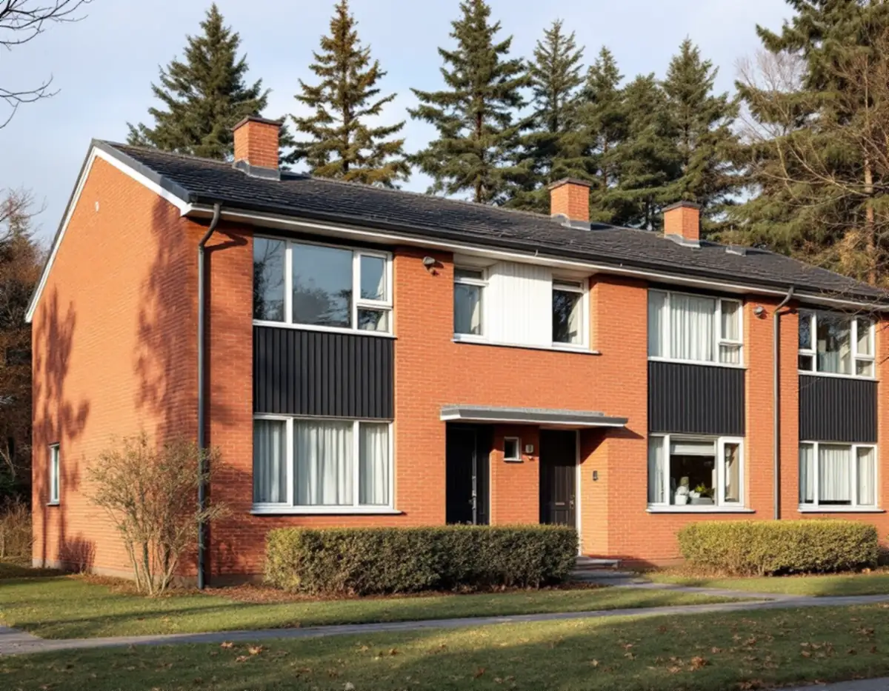
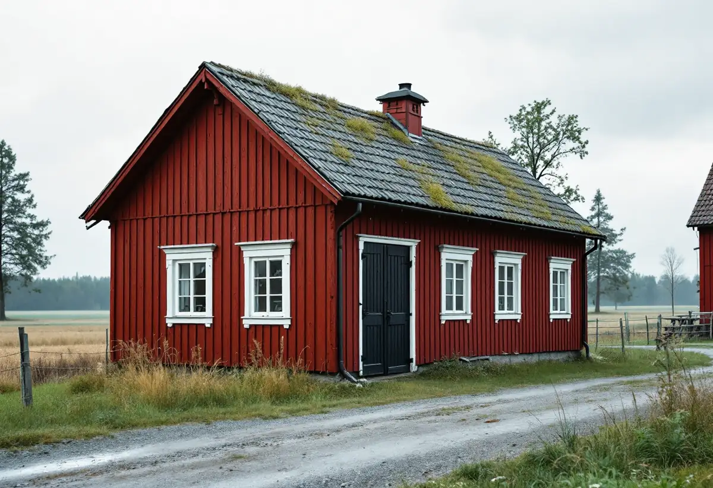

Platsbesök
Vi tittar på puts, tegel, panel och fönster och tar reda på vilken färg och vilken typ av färg som sitter på.
Botkyrkas kulturmiljöprogram beskriver färgen område för område: kvarter där varje gård har sin egen kulör, radhus där tegel och trä samspelar och byar där husen är faluröda. Geal Entreprenad AB målar fasader, fönster och snickerier ute och inne i hela kommunen, från Tumba och Tullinge till Grödinge, med gratis platsbesök och skriftligt kostnadsförslag.

Kulturmiljöprogrammet, som kommunfullmäktige antog i maj 2014, lyfter fram Tuna i Tumba som ett exempel på det tidiga 1960-talets bebyggelse med hög kvalitet i gestaltning och genomförande. Området planerades under sent 1950-tal och har punkthus, kringbyggda lamellhuskvarter, villor och radhus.
Om lamellhusen skriver programmet att de har kvar en tidstypisk färgsättning med dova kulörer och olika färger inom varje kvarter. Långsidorna är putsade och gavlarna av tegel, och riktlinjerna säger att lamellhusens tidstypiska karaktär ska bevaras. För punkthusen skriver programmet att repetitionen ska värnas vid ändring och underhåll av fasaderna och att balkongfronterna ska utformas enhetligt.
Radhusen söder om Lindhovsvägen beskrivs som välbevarade och av hög arkitektonisk kvalitet, med en kombination av tegel och trä i fasaderna och ett enkelt, sakligt formspråk. Där handlar en målning nästan bara om träpartierna. Ursprungliga dörrar och fönster ska enligt programmet behållas, så vi skrapar, lagar och målar dem hellre än att föreslå byte.

Segersjöområdet planerades under 1940-talet på mark som kommunen köpte av Tumba pappersbruk, i första hand för att ge bostäder åt personalen vid bruket och vid sanatorierna i Uttran och Tullinge. Programmet beskriver bebyggelsen som präglad av hög kvalitet i gestaltning, utförande och materialval.
Två färgdetaljer nämns särskilt. Olika kulörer i puts och på balkongfronter har använts för att skapa variation i ett i övrigt enhetligt formspråk. I 1960-talsdelen är en tidstypisk detalj att taken avslutas med en mörklaserad sarg av liggande fjällpanel.
En mörk lasyr på fjällpanel ska få fortsätta se ut som lasyr, så vi tvättar, slipar bort grått trä och bättrar med samma typ av produkt. Skulle sargen strykas med täckande färg ändras både kulör och karaktär. Är det hela takfoten som behöver ses över finns mer under takrenovering i Botkyrka.
Utanför tätorterna pekar programmet ut gamla byar med lång kontinuitet. I Näs by finns ett tjugotal äldre byggnader från främst 1700- och 1800-talen, med panelklädda boningshus och timrade ekonomibyggnader som alla är målade i en enhetlig faluröd kulör. Programmet räknar den enhetliga karaktären till det som ska respekteras.
Riksantikvarieämbetets handbok om traditionella färgtyper beskriver slamfärgen som en av de äldsta och mest använda färgerna i landet. Den varnar för att en slamfärgad yta inte går att återföra till slamfärg när den väl har målats med till exempel latex-, alkyd- eller linoljefärg, även om den gamla färgen tas bort. Ny panel som sätts in i en gammal fasad ser enligt handboken ljusare ut i början, men kulören jämnar ut sig efter ett tag.
För en lada eller ett boningshus i en sådan by betyder det rödfärg igen, med borstning och lagning av trä före strykningen. Ska fönster och knutar målas samtidigt tar vi med dem i samma kostnadsförslag, men som egna poster.
Botkyrka kommun förklarar att byte av kulör, till exempel att måla om ett hus från rött till vitt, räknas som fasadändring. På ett en- eller tvåbostadshus är det normalt lovfritt, men den utökade lovplikten gäller för alla typer av lovfria fasadändringar, både inom och utanför detaljplan, om byggnaden eller området är särskilt värdefullt.
För att se om det gäller ditt hus hänvisar kommunen till sin webbkarta. Under fliken Bibliotek och kultur finns lagret Kulturmiljöprogram, och under Riksintressen lagret Kulturmiljövård. Kommunen skriver också att detaljplanen och översiktsplanen bör kontrolleras, liksom om området har ett gestaltningsprogram.
Den som vill vara säker kan söka frivilligt bygglov. Då prövar byggnadsnämnden åtgärden och fattar ett bindande beslut, mot en avgift. Boverket påpekar att ommålning i samma kulör normalt räknas som underhåll, medan ett byte av färgtyp, till exempel från slamfärg till silikonhartsfärg, kan bedömas påverka husets karaktärsdrag. Läs mer om färg och fasad på sidan om målare.
Vi tittar på puts, tegel, panel och fönster och tar reda på vilken färg och vilken typ av färg som sitter på.
Vi går igenom kommunens webbkarta och detaljplanen för fastigheten innan kulören bestäms.
Färgtyp, kulör, förarbete och antal strykningar skrivs ut, med fönster och snickerier för sig.
Tvätt, skrapning, slipning av grått trä, lagning och kittning av fönster.
Grundning och strykningar görs när vädret tillåter, med de torktider färgen kräver.
Vi går igenom huset tillsammans och bättrar där det behövs.
Skatteverket räknar målning av fasader samt av golv, tak, väggar, fönster och element som rotarbete i ett småhus. Staket och murar ger inget avdrag. Avdraget är 30 procent av arbetskostnaden, högst 50 000 kr per person och år och högst 75 000 kr tillsammans med rutavdrag.
I en bostadsrätt, till exempel i ett av lamellhusen, gäller avdraget bara arbete inne i lägenheten. Material och resor ger inget avdrag. Geal drar avdraget direkt på fakturan.
Mest avgör hur mycket trä som ska målas och i vilket skick det är. Ett radhus i tegel och trä har få kvadratmeter men många detaljer, en rödfärgad lada har stora ytor som går fort, och en 1960-talsvilla med lasyrad panel kräver mest slipning. Platsbesöket är gratis och du får ett skriftligt kostnadsförslag.
Fasad, fönster och invändig målning.
Målare i Stockholm →Takbyte, takbesiktning och plåtarbeten.
Takläggare i Botkyrka →Tullinge, Uttran och Tumba.
Takrenovering i Botkyrka →Kartlagren, checklistan och vattnet.
Attefallshus i Botkyrka →Flytt av badrum, stammar och frånluft.
Badrumsrenovering i Botkyrka →Nytt hus, utfart och byggarbetsplats.
Byggföretag i Botkyrka →Fönstertyper per epok i Botkyrkas villor.
Fönsterbyte i Botkyrka →Kataloghus, källargolv och trägolv.
Golvläggare i Botkyrka →Kök i villor och radhus, för att bo kvar.
Köksrenovering i Botkyrka →Rännor, stuprör och plåttak i Botkyrka.
Plåtslagare i Botkyrka →Altan, plank och förråd i villaområdena vid järnvägen.
Snickare i Botkyrka →Material, solpaneler och takkupor.
Takbyte i Botkyrka →Ny tapet på träfiberskivor och gamla lager.
Tapetsering i Botkyrka →Tullingehuset i omgångar.
Totalrenovering i Botkyrka →